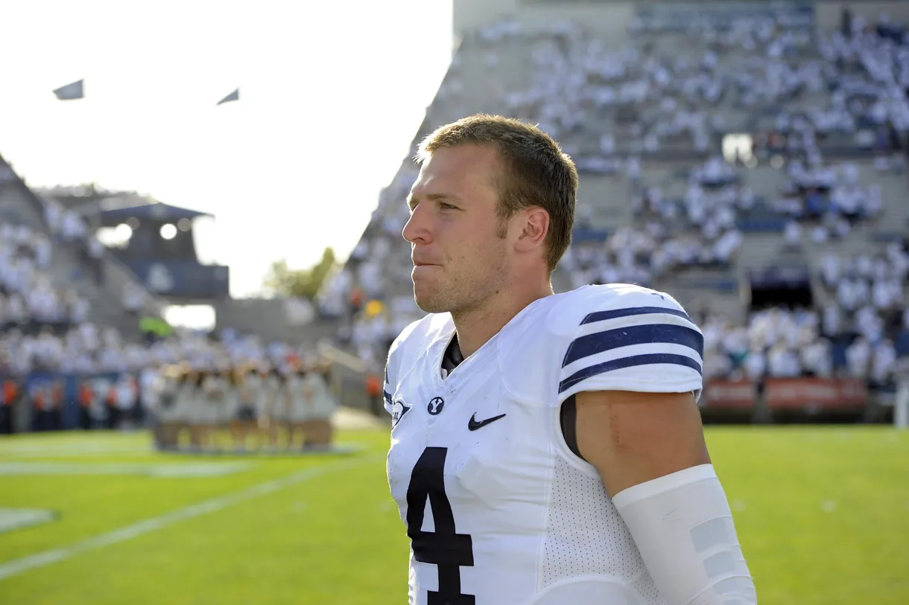

- College Career
- Passing
- 2012: 425 YDS | 4 TD
- 2013: 2938 YDS | 19 TD
- 2014: 975 YDS | 7 TD
- 2015: 268 YDS | 1 TD
- 2016: 2323 YDS | 12 TD
- Total: 6929 YDS | 43 TD
- Rushing
- 2012: 336 YDS | 4 TD
- 2013: 1344 YDS | 10 TD
- 2014: 460 YDS | 8 TD
- 2015: 72 YDS | 2 TD
- 2016: 603 YDS | 8 TD
- Total: 2815 YDS | 32 TD

- Professional Career
- Passing
- Yards: 2161
- Touchdowns: 9
- Rushing
- Yards: 1602
- Touchdowns: 21
- Receiving
- Yards: 454
- Touchdowns: 9
- Other
- 23.8 Kick Return Yards on Average
- 11 Tackles
- 2 Blocked Punts
Highlights